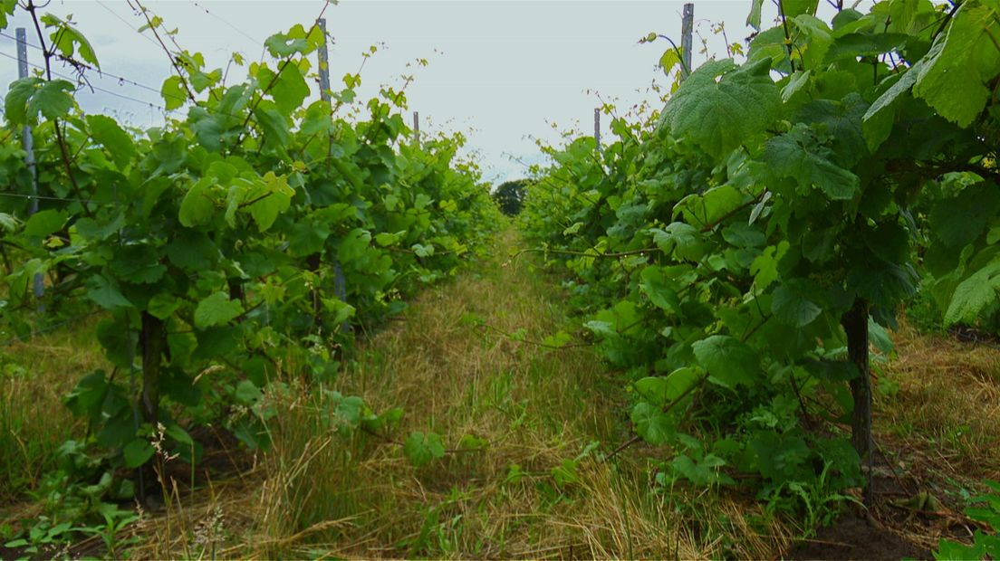

Goud uit Rectum: wijn met wereldklasse
Goud op wereldniveau voor wijngaard uit Rectum: ‘Meteen scoren uit eerste productie verwacht je niet’
In Rectum wordt niet alleen gewoond en gewandeld, maar ook wijn gemaakt. En met succes: De Wijnmakers uit Rectum wonnen met hun eerste productie meteen goud op internationaal niveau. Hun Rode Ros 2018 viel in de prijzen bij een grote wijnkeuring in Wenen. Een verrassende prestatie voor zo’n kleine buurtschap en natuurlijk een extra leuk feitje bij de bijzondere plaatsnaam Rectum.